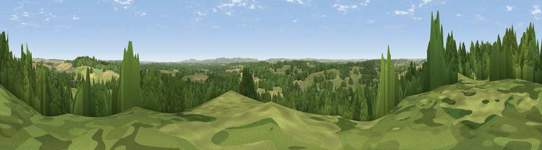

Viewpoint near Bere Regis
#22540 in England · top 46% of its area beats it · near Bere RegisWhere it is
The exact computed spot (SY 84025 93775). Click the marker for map links.
The view, rendered

A 360° render of this exact spot computed from the terrain model, tree cover and land cover — summer colours, afternoon light, calibrated against photographs of famous viewpoints. Real trees, hedges and buildings will differ in detail.
The panorama
Grey silhouette: terrain skyline in each direction (720 bearings, Earth curvature and refraction included). Dashed green: skyline with trees (+15 m) and buildings (+8 m) as obstacles. Blue strip: how far the ground is visible on each bearing.
Where the view opens
Wedge length = distance to the farthest visible ground on that bearing (vegetation-aware). Rings at 10, 25 and 50 km.
What fills the view
47% grassland · 38% woodland · 14% cropland · 2% built-up
Angular shares of the visible panorama (visual magnitude), not map area. Landscape diversity 0.47 (0–1 Shannon).
Key numbers
More beautiful places nearby
The staircase of upgrades: each row has a higher view potential than everything closer. Driving times are estimates from straight-line distance, calibrated against real road routing — check an actual route before setting out.
| Place | Direction | Drive | Score |
|---|---|---|---|
| Viewpoint near Bere Regis | ENE · 2 km | ~5 min | 56.1 |
| Viewpoint near Winterborne Houghton | NNW · 10 km | ~19 min | 59.9 |
| Viewpoint near Milton Abbas | NNW · 10 km | ~19 min | 64.2 |
| Viewpoint near Melcombe Bingham | NW · 13 km | ~24 min | 66.8 |
| Viewpoint near Melcombe Bingham | NW · 13 km | ~24 min | 70.5 |
| Whiteway Hill | SSE · 13 km | ~24 min | 85.0 |
| Rings Hill | S · 13 km | ~25 min | 87.5 |
| Viewpoint near Abbotsbury | WSW · 29 km | ~46 min | 89.0 |
50.74336, -2.22777 · source: screening · position refined by local search. Computed location — check access rights before visiting.